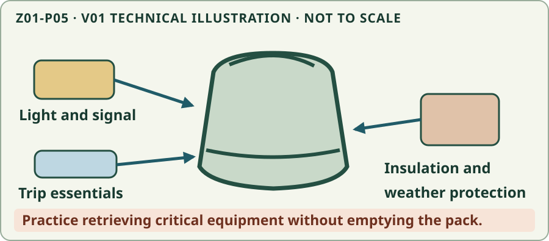

Z01-P05 · Survival fundamentals · New manuscript
Pack by failure mode
Match kit functions to foreseeable failures and practice using them.
When it applies · Day and overnight travel. Terrain, temperature and time without help shape the kit.
Equipment · Map, light, insulation, shelter, water, food, first aid and other route-appropriate essentials.

Actions
- Map darkness, navigation loss, exposure and delayed return to independent kit functions. Consider Sun protection and repair supplies as conditions warrant.[E02]
- Check each function at home: a light turns on, the map works offline, the shelter can be set up, and spare insulation is dry.[E02, ED]
- Give shared gear an owner. Ensure the group can reach critical pieces without emptying all the packs.[ED]
Verify · Simulate one failure and retrieve the correct item without a signal or a search through loose gear.[ED]
Stop or change course · Narrow or postpone the trip if critical protection or navigation is absent.[E01, E02, ED]
Evidence and editorial notes
- E01 · Minnesota DNR · Safety in State Forests (current web edition)
- Section: Before your trip and while visiting · Conditions: State-forest travel and backcountry planning
Support: Know the route, check conditions, carry navigation and safety equipment and share trip details.
Limitations: Conditions and trail maintenance vary seasonally across forest units. · Conflicting evidence: None; aligns with NPS-H.
Editorial note: Foundation for trip planning and pre-departure risk checks. · Specialist reviewer: Land management and search and rescue
Primary source · checked 2026-11-24 - E02 · NPS · Ten Essentials (current web edition)
- Section: Navigation; insulation; emergency shelter; emergency food and water · Conditions: Outdoor trips; adjust kit to season and route
Support: Carry essential systems including navigation, insulation, light, water and emergency shelter.
Limitations: Carrying items without practice or cold-weather verification does not ensure readiness. · Conflicting evidence: None; baseline kit system architecture.
Editorial note: Supports failure-mode packing and kit verification cards. · Specialist reviewer: Field education and search and rescue
Primary source · checked 2026-11-24
Source lineage · NPS Ten Essentials; new manuscript · Classification · New manuscript.